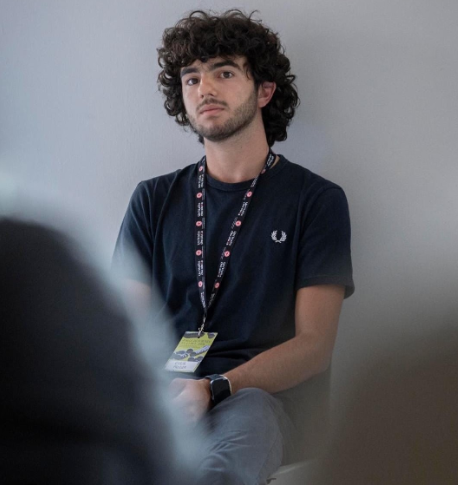

Giulio Prodan
Studente di Medicina ha fondato ClassLab nel 2022 per colmare il divario tra teoria e pratica, consentendo ai bambini non solo di comprendere la biologia, ma di viverla in maniera divertente. Da 4 anni collabora con il dipartimento di comunicazione scientifica dell’International Center for Genetic Engineering and Biotechnology e dal 2024 si occupa di prevenzione e sensibilizzazione per la Croce Rossa Italiana.
Nel 2024, grazie a ClassLab, è stato nominato Alfiere della Repubblica Italiana dal Presidente Sergio Mattarella, un riconoscimento che considera un incoraggiamento a continuare a costruire ponti tra il sapere e le nuove generazioni.